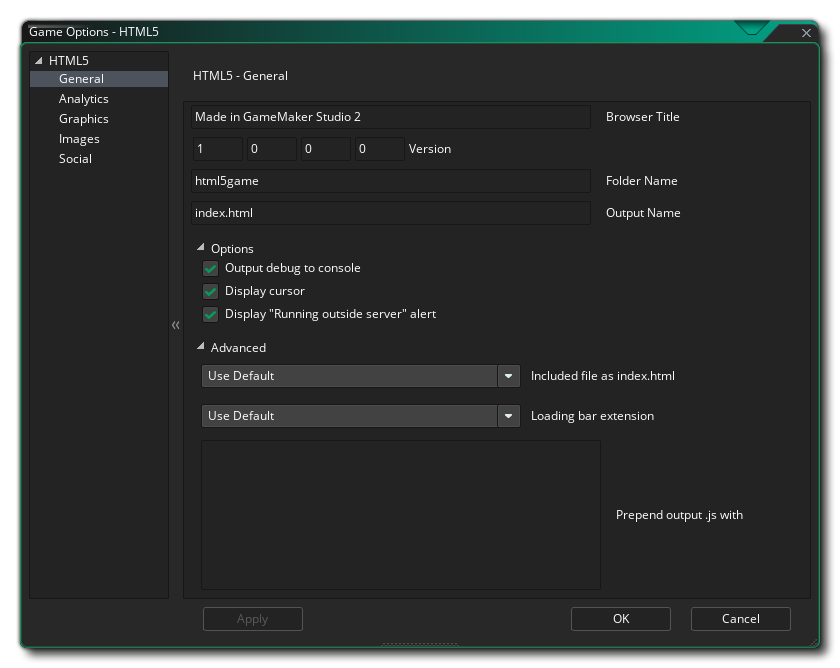
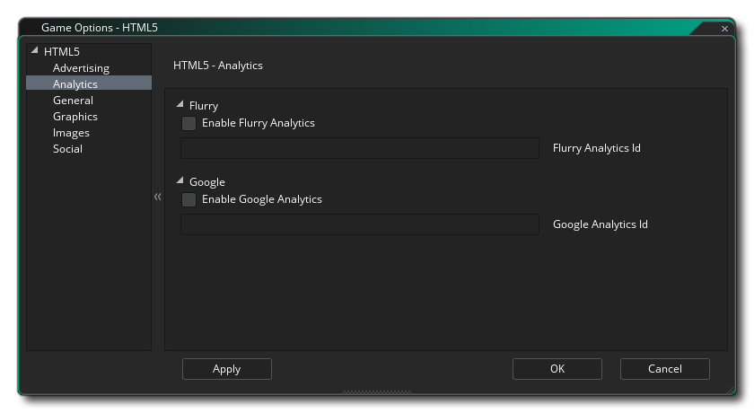
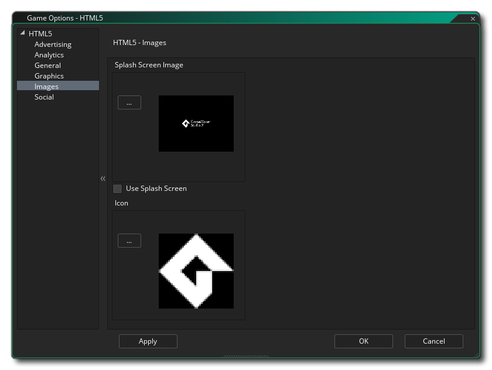

Cette section décrit les différentes options à votre disposition pour contrôler la manière dont vos projets de jeu HTML5 seront compilés. Les différentes sections sont:

Dans cette section, vous avez des champs pour renseigner les informations suivantes sur votre jeu:
- Titre du navigateur: vous pouvez indiquer ici le texte à utiliser pour la barre de titre de l'onglet de votre jeu dans le navigateur.
- Version: Le numéro de version de votre projet.
- Nom du dossier: nom du dossier dans lequel vos fichiers de jeu HTML5 seront stockés ("html5game" par défaut).
- Nom de sortie: Il s'agit du nom du fichier HTML de sortie. Vous pouvez le remplacer par le nom "index.html" par défaut.
Sous les champs d’information sur le jeu, vous avez également les options suivantes:
- Output Debug To Console: Ceci enverra toutes les sorties de débogage à la console JS de votre navigateur. Ceci est désactivé par défaut.
- Afficher le curseur: Ceci désactivera le curseur de la souris lorsque celui-ci se trouvera au-dessus de la grille de jeu. Ceci est activé par défaut.
- Afficher l'alerte "Running Outside Server": si vous testez un jeu localement (c'est-à-dire: en cliquant sur le fichier d'index de votre ordinateur plutôt que sur un serveur - non recommandé), vous recevez normalement un avertissement vous informant que tout ne fonctionnera pas correctement. vous pouvez vous attendre en raison de la sécurité du navigateur pour les fichiers locaux. Vous pouvez supprimer cet avertissement en décochant cette option. Il est activé par défaut.
Sous les paramètres généraux, vous avez les options avancées, à savoir:
- Fichier inclus en tant qu'index.html: ceci permet d'ajouter un fichier "index.html" personnalisé à utiliser à la place du fichier prédéfini que GameMaker Studio 2 génère par défaut. Cela peut être très utile si vous avez implémenté une conception de site Web ou souhaitez inclure certaines fonctionnalités dans toutes vos versions HTML5. Le fichier à utiliser doit être inclus en tant que fichier inclus dans le projet de jeu.
- Bar Chargement Extension: Cela va changer la barre de chargement par défaut qui a été ajouté à votre GameMaker Studio projet 2 comme extension.
- Prepend output.js: Ici, vous pouvez ajouter le préfixe *.js sortie avec tout JavaScript supplémentaire nécessaire pour votre jeu. Par exemple, une application Chrome Store peut nécessiter que vous ajoutiez window.localStorage = undefined; à la sortie JS, pour laquelle vous utiliseriez cette option.

Cette section vous permet d'ajouter des analyses à votre jeu, ce qui vous permet d'utiliser certains produits tiers pour suivre votre jeu et ses ventes ou ses jeux. Vous pouvez spécifier si vous souhaitez utiliser Flurry Analytics ou Google Analytics pour suivre votre partie. En raison de la nature de ces fonctions, vous ne pouvez en activer qu’une à la fois. Une fois que vous avez coché les options Activer Flurry Analytics ou Activer Google Analytics, vous devez également ajouter l’ID unique qui vous a été attribué dans la zone appropriée.
Pour plus d'informations générales sur l'analyse, reportez-vous à la base de connaissances YoYo. Pour plus d'informations sur les fonctions que vous pouvez utiliser pour envoyer des données d'analyse, cliquez ici.
Ici, vous pouvez modifier les détails suivants liés à la façon dont votre jeu sera affiché (notez que tous les navigateurs n’afficheront votre jeu de la même façon, alors testez ces options sur autant de navigateurs que possible pour vous assurer qu’ils ont l’effet souhaité).:
- Autoriser le passage en plein écran: Cochez cette case pour permettre à l'utilisateur de basculer le jeu du mode fenêtré au mode plein écran en utilisant <CTRL> + <CMD> + <F> sur Mac et F10 sous Windows. Ceci est activé par défaut.
- Interpoler les couleurs entre les pixels: active l'interpolation, qui "lisse" les pixels. Pour les graphismes nets en pixels, il devrait être désactivé, mais si vous avez de beaux mélanges alpha et des graphiques à bords lissés, il est préférable de les laisser. La valeur par défaut est désactivée.
- Centrer le jeu dans le navigateur: Cochez cette case pour centrer automatiquement l'écran de jeu dans le navigateur qui exécute le jeu.
- Utiliser les particules intégrées Cette option exportera les images-objets requises pour le système de particules intégré avec votre partie. Ces images-objets sont stockées dans des pages de texture individuelles, ce qui signifie qu'elles ne sont pas la méthode la plus efficace pour générer des particules pour cette plate-forme. Il est donc recommandé (si vous n'utilisez pas WebGL) de décocher cette option et d'utiliser vos propres images-objets de particules qui seront utilisées. stockées sur les principales pages de texture pour votre jeu.
- WebGL: choisissez de désactiver le support WebGL, de le rendre facultatif (détection automatique) ou d'en faire une exigence pour votre jeu. Il convient de noter que pour tester les performances dans toutes les circonstances, vous devez le désactiver, puis le configurer normalement pour la détection automatique pour la publication. En faire une exigence peut réduire considérablement la compatibilité de votre jeu avec différents types de navigateurs.
- Mise à l'échelle: votre jeu peut être configuré pour redimensionner automatiquement le canevas du dessin afin de conserver les proportions au navigateur, ou vous pouvez choisir de l'étirer pour l'adapter. L’option d’étirement pour l’ajustement n’a pas pour effet d’afficher le jeu dans le navigateur en plein écran, mais plutôt d’étirer ce qui est dessiné pour s’adapter à la taille de la toile, définie par la première salle du jeu.
Enfin, il est possible de définir la taille de la page de texture. La taille par défaut (et la plus compatible) est 2048x2048, mais vous pouvez choisir entre 256x256 et 8192x8192. Il existe également un bouton intitulé Aperçu qui générera les pages de texture pour cette plate-forme, puis ouvrira une fenêtre afin que vous puissiez voir à quoi elles ressemblent. Cela peut être très utile si vous souhaitez voir comment les pages de texture sont structurées et éviter d’avoir des pages de texture plus grandes (ou plus petites) que nécessaire.
REMARQUE: Sachez que plus la taille de la page de texture est grande, moins votre jeu sera compatible.

Cette section vous permet de définir le favicon et l’écran de démarrage. L’icône doit être créée en tant que *.ico fichier et peut avoir une taille de 16x16, 32x32, 48x48 ou 64x64 pixels et une profondeur de couleur de 8 bits, 24 bits ou 32 bits. L'écran de démarrage doit correspondre à la taille de la toile qui contiendra votre jeu. Il remplacera toutes les barres de chargement si vous cochez l'option Utiliser l' écran de démarrage (par exemple, vous pouvez avoir une barre de chargement, OU un écran de démarrage, mais pas les deux).. Les images plus petites ou plus grandes sont permises mais seront redimensionnées pour s'adapter.
Il est à noter que GameMaker Studio 2 dispose d'un outil Project Image Generator qui permet de créer automatiquement toutes les images requises pour les différentes plates-formes cibles pour lesquelles votre jeu est compilé. Si vous utilisez cet outil, vous devez réviser les images créées pour vous assurer qu’elles correspondent à vos besoins.
L'onglet social est utilisé pour configurer la communication Facebook dans votre jeu. Si vous avez besoin des fonctions Facebook, vous devez cocher la case "Utiliser Facebook", puis fournir l'identifiant et le nom d'affichage de l'application Facebook. Notez que toutes les fonctionnalités de Facebook sont accessibles via une extension. Lorsque vous cochez pour la première fois la case Utiliser Facebook, il vous sera demandé de télécharger et d'installer l'extension Facebook à partir de Marketplace (vous devrez peut-être vous connecter à votre compte YoYo avant de pouvoir le télécharger)..